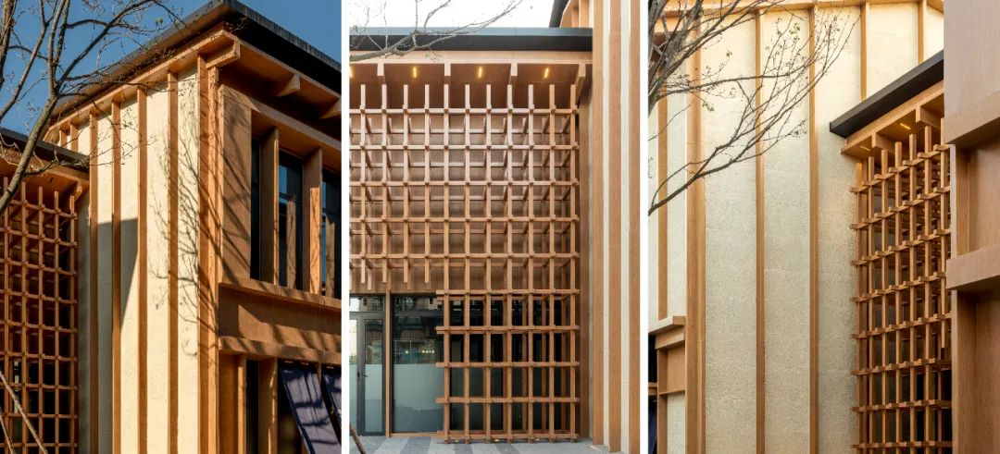
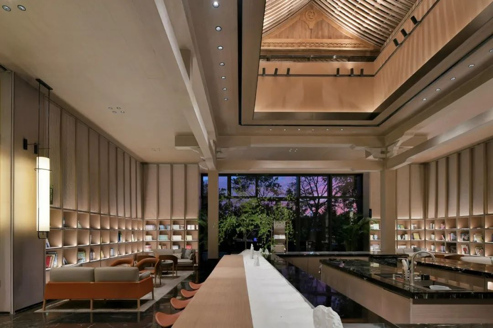

architect, urban designer, land planner
Sino-japanese Industrial Park, Shenyang, 2020-2022


The Light of the West Stars, Shenyang, 2021-2022


Mixed use
As Director of Design, development team, 2021-2022, with Vanke Co.
Collaborators: Shiro Sugane Architects, Topscape landscape architects, Ueyoshi Landscape Co.
Overall view
Sina-japanese Industrial Park is a PPP(public private partnership) project that is meant to be a Venue to attract investment from Japan

